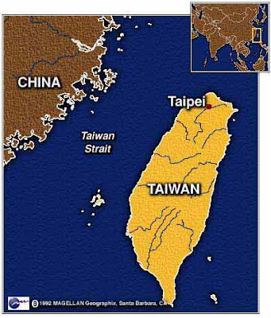

2011 International Tsai-mo Fan Art Exhibition
sábado, 23 de julio de 2011
{kind=link}

International Tsai-mo, Enriqueta Hueso Exhibition 10- 09- 2011 Taichung City (Taiwan)
With the of the Federation of International Tsai-mo Artists(Fitma), the 2011 International Tsai-mo Fan Art Exhibition will take place at the Da Dun Cultural Center of Taichung City, Taiwan from September 10 to 22, 2011for the purpose of promoting international art and stimulating a dialogue between artist. An exhibition catalog of artworks from over 30 participating countries will also be published.The theme for this year’ s event is “Fan Art”, which focuses on the correlation between the fan and the spirit of art, and related perspectives on life. Not only does it emphasize experimentation and imagination, but also value the freedom of creation for each artist curator Huang Chao-Hu
With the of the Federation of International Tsai-mo Artists(Fitma), the 2011 International Tsai-mo Fan Art Exhibition will take place at the Da Dun Cultural Center of Taichung City, Taiwan from September 10 to 22, 2011for the purpose of promoting international art and stimulating a dialogue between artist. An exhibition catalog of artworks from over 30 participating countries will also be published.The theme for this year’ s event is “Fan Art”, which focuses on the correlation between the fan and the spirit of art, and related perspectives on life. Not only does it emphasize experimentation and imagination, but also value the freedom of creation for each artist curator Huang Chao-Hu